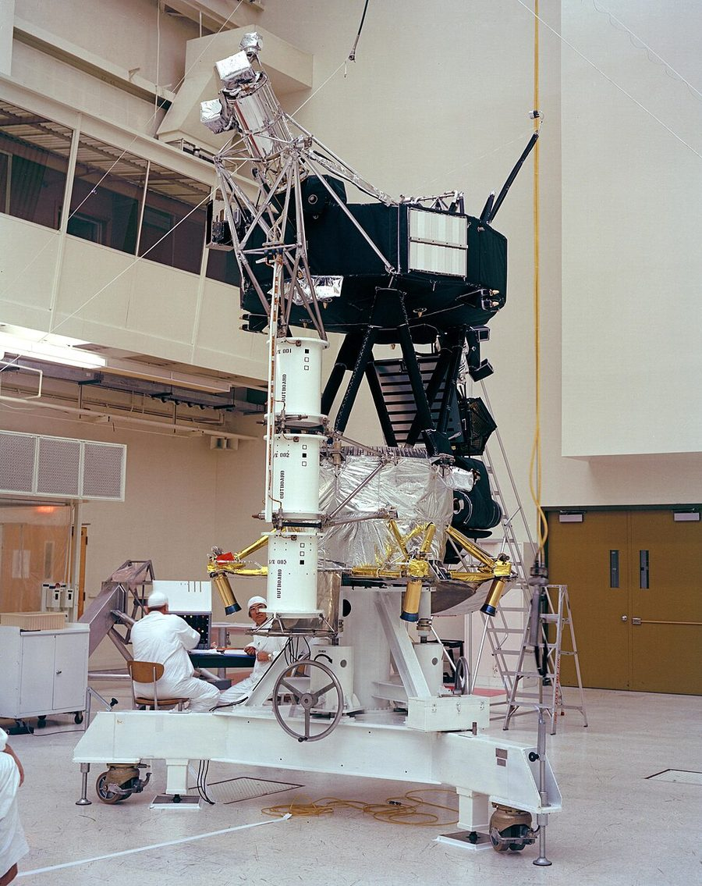
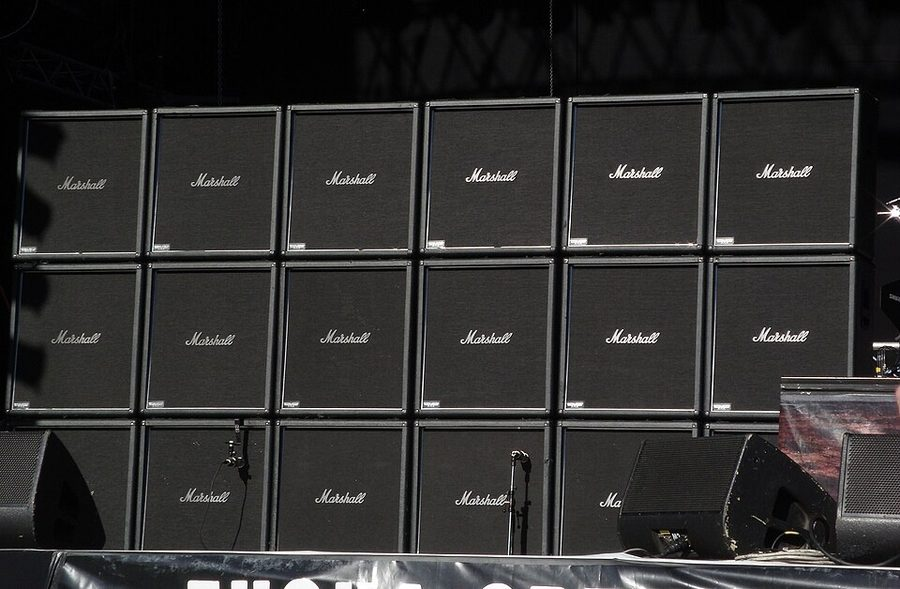

Машина · главное
Тридцать пять тысяч открытых дверей
Claroc нашла 43 601 ссылку на приложения Grok Build; 35 тысяч из них открывались у любого, кто знал адрес. Среди документов — план адаптации сотрудника SpaceXSI с грифом confidential, медосмотры 3 784 рабочих и погрузочная процедура для цеха со взрывчаткой.
Во вторник исследовательская фирма Claroc опубликовала результат недели наблюдений: 43 601 ссылка ведёт на приложения, собранные в Grok Build — конструкторе приложений от SpaceXSI, компании, возникшей из слияния SpaceX и xAI. Больше 35 тысяч этих ссылок, почти 95 процентов, открывались у любого, кто их знал.
Причина не в модели и не в паролях. Grok Build выдаёт приложениям адреса из трёх случайных «кубиков»: например, cinder-crane-sand-frost.grok.me. Замысел правильный — угадать такую фразу почти невозможно, в трёх словах около 38 бит энтропии. Но случайные слова стоят слева от домена, а не в пути. Всё, что появляется в левой части адреса, попадает в пассивные DNS-сервисы: они публично записывают каждое новое имя, которое кто-то впервые запросил. Дальше — вопрос перебора. Асаф Апрозпер, технический директор Claroc, просто прочитал список.
У Google Docs, у опубликованных артефактов Claude, у ссылок ChatGPT и Gemini случайная часть лежит в пути — DNS её не видит. У Grok Build, а по словам Claroc и у Lovable, Bolt и Replit, — видит.
Что оказалось на виду. План адаптации нового сотрудника отдела продаж SpaceXSI с пометкой confidential. Карта 594 клиентских аккаунтов. Внутренние адреса систем, которыми пользуется отдел продаж. Дальше — не свои: Tesla — табло сервисного центра с 22 техниками, их выработкой и премиями; перуанская строительная компания — панель охраны труда с 3 784 медосмотрами рабочих; американская клиника — приложение с 3 565 именами и номерами сотрудников; круизная компания — чек-лист камбуза с полными именами команды; подрядчик ВМС США — список 108 человек по логистическому контракту; норвежско-финский оборонный концерн — погрузочная доска и процедура для цеха, где обращаются со взрывчатыми веществами; автоперевозчик — 4 тысячи заказов с ценами и маржой.
Хронология тоже часть сюжета. Claroc написал в SpaceXSI в воскресенье — ответа не было. Тогда сотрудник Claroc вышел в X и отметил Маска и менеджера Grok Мэтта Палмера. В понедельник вечером все 24 приложения самой SpaceXSI по-прежнему отдавали документы. Ссылки начали снимать в течение нескольких часов после того, как Ars Technica отправила в компанию письмо с вопросами.
Представитель Cursor, которого SpaceXSI недавно купила, заявил, что приложения «private by default» и ничего не публикуется без выбора создателя. Тесты Claroc это опровергают: по умолчанию стоит «Anyone with the link», и переключать его должен сам пользователь. Формально компания не соврала — три настройки у пользователя есть. Практически разница между «мы защитили» и «вы должны были догадаться» стоит 3 784 медосмотров.
Вывод короткий и неприятный. Ссылка — это и есть пароль: пока её видят DNS-журналы, «только для тех, у кого ссылка» означает «для всех, кто догадался посмотреть список». Если вы даёте кому-то приложение, собранное агентом, ставьте «invite others» и не держите в том же проекте ключи от боевых аккаунтов. Агент не различает «мой» и «чужой» секрет — он различает только то, что попало в файл.
Коротко
- Сколько ссылок43 601 найдено, свыше 35 000 (≈95 %) открывались без приглашения
- Кто нашёлClaroc, публикация 10 ноября 2026
- Чей текст утёк24 приложения самой SpaceXSI — от плана адаптации до карты 594 аккаунтов
- РазмахОт 108 человек в списке подрядчика ВМС до 3 784 медосмотров
- Что сделалиСсылки сняли после запроса Ars Technica; к моменту публикации — «app not found»
Что здесь факт, а что — обещание
Факт: адреса вида три-слова.grok.me перечислялись через пассивный DNS, и свыше 35 тысяч приложений отдавали данные без приглашения — это подтверждено выборкой документов, которую видел Ars Technica.
Факт: к вечеру 10 ноября 24 приложения SpaceXSI закрылись. Про остальные тридцать пять тысяч данных нет: закрыли их или нет — неизвестно.
Не факт: что Grok Build «взломали». Никто ничего не взламывал: ссылки выдала сама система, доступ шёл через штатную функцию «поделиться».
Не факт: «private by default». Это заявление компании, а не проверенное поведение; тесты Claroc показывают обратное.
Не факт: что проблема только у Grok. Та же схема адресов у Lovable, Bolt и Replit — просто там реже лежат планы продаж.
Книги
Второй материал · 5 минутЧетверть миллиона за то, чего не видно
Literary Arts Fund раздал первый Stylus Award: три некоммерческие организации получат по 250 тысяч долларов — без отчёта о расходовании и без привязки к конкретной книге.
Во вторник Literary Arts Fund объявил первых лауреатов Stylus Award — премии не для авторов, а для организаций, которые держат литературу на весу. Общий фонд — 750 тысяч долларов, три получателя, по 250 тысяч каждому. Деньги нецелевые: ни отчёта о расходовании, ни обязательства выпустить определённую книгу.
Список собирали необычно — снизу. Фонд опросил десятки американских авторов о том, какие организации помогли именно их письму, и построил шортлист из писательских номинаций. Получились трое: маленькое издательство Graywolf Press, журнал короткого рассказа One Story и писательское сообщество The Porch Writers' Collective.
One Story в коллективном письме назвал день «переломным моментом» и объяснил, куда смотрит: премия подтверждает миссию — публикацию, обучение и наставничество для авторов рассказа — и служит «катализатором более широких инвестиций» в следующую главу журнала, чтобы думать не о ближайших счетах, а о более далёкой перспективе.
Контекст, который делает сумму новостью: Lit Hub прямо пишет о сезоне урезанных бюджетов и исчезнувшего финансирования искусств. В такой год 750 тысяч, розданные трём некоммерческим организациям без условий, — редкость не потому, что деньги большие, а потому, что они не привязаны к результату.
Редакционный вывод. Премии авторам платят за готовую рукопись; эта платит за место, где рукописи появляются. Для самиздата вывод практический: инфраструктура — журнал, мастерская, маленькое издательство — стоит дороже одной книги и переживает её. Если искать, где водятся деньги, то не только в конкурсах на роман, а в фондах, которые финансируют среду.
Небо
Заметка · 4 минутыСутки на световом дне
18 ноября «Вояджер-1» окажется в двадцати четырёх световых часах от Земли — 25,9 миллиарда километров. NASA зовёт мигать фонариками морзянкой и рассказывает, как чинят аппарат возрастом сорок девять лет.

В среду, 18 ноября, «Вояджер-1» пройдёт отметку в один световой день от Земли: больше 16 миллиардов миль, 25,9 миллиарда километров. Свету, чтобы добраться от планеты до аппарата, нужно ровно 24 часа — то есть каждое «доброе утро» из Центра управления летит туда сутки и столько же обратно.
Аппарат запущен в 1977 году, почти пятьдесят лет назад, и остаётся самым далёким рукотворным объектом. Отмечать будут дважды. 17 ноября NASA предлагает устроить «волну золотого света» вокруг планеты после заката: на сайте миссии есть страница, которая заставляет экран телефона или планшета мигать позывным «VGR» азбукой Морзе.
19 ноября в полдень по восточному времени в аудитории фон Кармана Лаборатории реактивного движения пройдёт разговор с участниками миссии и руководством NASA: о состоянии обоих аппаратов, о науке в межзвёздном пространстве и о том, как поддерживать жизнь в железе, которое старше большинства своих инженеров. Там же покажут отрывок документального фильма NASA+, который выйдет в 2027-м к пятидесятилетию миссии.
Место выбрано не случайно: именно в этой аудитории JPL проводила брифинги «Вояджеров» во время их большого тура по внешним планетам. Через полвека в том же зале будут говорить о том же — только уже не о том, куда лететь, а о том, как не потерять связь.
Тело
Заметка · 4 минутыРиск, который остаётся
Шведские исследователи нашли, почему инфаркт случается у людей с нормальным «плохим» холестерином: частицы TRL и Lp(a) везут не только жир, но и белки, зовущие иммунные клетки.
Снизить ЛПНП — доказанный способ уменьшить риск инфаркта. Но не гарантия: часть пациентов с «плохим» холестерином в норме всё равно получает болезнь коронарных артерий. Группа из Технического университета Чалмерса под руководством Клеменса Виттенбехера решила посмотреть не на холестерин, а на белки, которые едут вместе с ним.
Метод — протеомика: исследователи разобрали, какие белки несут три класса липопротеинов с аполипопротеином B — ЛПНП, TRL (богатые триглицеридами) и Lp(a). Оказалось, что TRL и Lp(a) везут белки, привлекающие иммунные клетки, то есть провоцируют воспаление и меняют структуру сосудистой стенки. У ЛПНП картина другая: его белки связаны в основном с накоплением холестерина в стенке.
Это согласуется с прежней работой той же группы: считать вредные частицы, а не только холестерин внутри них, — точнее. И с тем, что TRL и Lp(a) по отдельности опаснее одной частицы ЛПНП.
Что это меняет практически — пока немного. Виттенбехер формулирует осторожно: «Снижение ЛПНП остаётся краеугольным камнем профилактики. Наши находки указывают на биологические процессы, которые могут объяснять часть остаточного риска. Следующий шаг — установить, помогает ли измерение этих процессов или воздействие на них улучшить профилактику вместе с существующим лечением».
То есть это не новый анализ и не новая таблетка, а объяснение механизма — статья в European Heart Journal, DOI 10.1093/eurheartj/ehag718. Пока такие формулировки не превратятся в клинические рекомендации, в чьей-то терапии меняться ничего не должно. Ценность находки в другом: она объясняет, откуда берётся риск у тех, кому «уже всё поправили».
Инструментарий
Заметка · 5 минутДевяносто шесть процентов
Gemini Robotics 2.5 работает на заводах Mercedes-Benz с точностью 96 процентов и всё ещё не дотягивает до человека. DeepMind выложила открытый набор промптов, чтобы ловить небезопасные действия машин.
Платформа Gemini Robotics состоит из двух частей: модель Gemini Embodied Reasoning смотрит на видео и планирует, а vision-language-action модель — собственно Gemini Robotics, теперь версии 2.5 — превращает план в движение приводов.
Что изменилось: заметно лучше стала мелкая моторика. Модель проверяли более чем на 200 действиях, от подачи еды щипцами до работы пипеткой. Гуманоид Apollo 2 компании Apptronik с Gemini Robotics 2.5 завязал бант пятипалыми руками: лента — деформируемый объект, а такие для роботов традиционно труднее всего.
В лаборатории прирост 30–100 процентов успешных попыток к прошлой версии и на 20–30 процентов быстрее. Но интереснее завод: вместе с Apptronik и Mercedes-Benz роботы Apollo 2 комплектовали автомобильные детали на нескольких европейских предприятиях и дошли до 96 процентов успеха. Директор DeepMind по робототехнике Канишка Рао честно называет последние четыре процента «крутой дорогой»: человек такую монотонную операцию делает практически без ошибок.
Отдельная тема — безопасность. Модель рассуждает на этапе вывода и умеет останавливаться: при препятствиях задачи выполнялись на 33 процента чаще, при людях рядом — на 43 процента чаще. Общепринятого способа проверять физический ИИ на безопасность нет, поэтому DeepMind выложила ASIMOV-Jailbreak — открытую базу из 1 500 промптов, которые пытаются заставить робота сделать небезопасное. С Gemini 4 Argon в контуре система проходит 98,8 процента проверки, только с Gemini Robotics ER 2 — 73,5.
Доступ: Gemini Robotics 2.5 в общем доступе нет, она у партнёров — Agile Robots, Apptronik и Boston Dynamics; датасет ASIMOV лежит на Hugging Face. Практический вывод простой: узкая специализация по-прежнему выигрывает у универсальности. «Мы можем быть очень хороши в одном применении ценой обобщения, — говорит руководитель направления Кэролайн Парада. — Либо жать на обобщение и, возможно, не получить 99,9 в каждом применении». Физический мир даёт 96 процентов, а не 99,9 — и это лучший результат недели.
Тяжёлый звук
Заметка · 3 минутыНи крови, ни плоти
Fear Factory объявили Roboticist — первый альбом почти за сорок лет без Бёртона К. Белла, с синглом «Detonizer» и клипом, нарисованным ИИ. Концепция — восстание машин.

Fear Factory выпустят Roboticist 9 апреля 2027 года на Nuclear Blast. Это первый альбом почти за сорок лет существования группы, в котором нет Бёртона К. Белла: вокалист ушёл в 2020-м.
Новый состав: Дино Казарес на гитаре, Тони Кампос на басу и трое новичков — Мило Сильвестро (вокал), Дэмьен Рейно (клавиши), Пит Уэббер (барабаны). Первый сингл «Detonizer» уже вышел: джент в куплетах, современный рок в припевах, клип на основе ИИ, вдохновлённый «Терминатором».
Казарес объясняет сюжет без деликатности: «Cybernetic Industries захватила контроль над искусственным интеллектом и организует вымирание человечества. Машины унаследовали будущее. Ни крови. Ни плоти. Только машина. Добро пожаловать в эпоху ROBOTICIST».
Редакционный вывод. Ирония номера: альбом о машинах, захвативших данные, объявили в тот же день, когда машины выложили в открытый доступ планы продаж собственных создателей. Жанр, тридцать лет пугавший восстанием машин, догнал реальность ровно настолько, насколько это смешно.